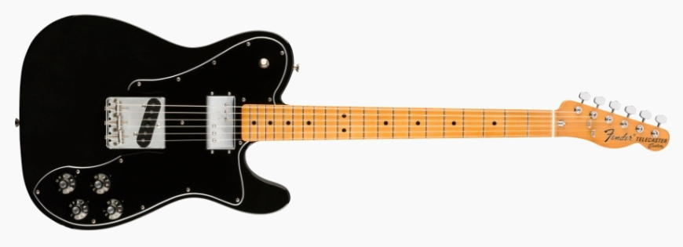
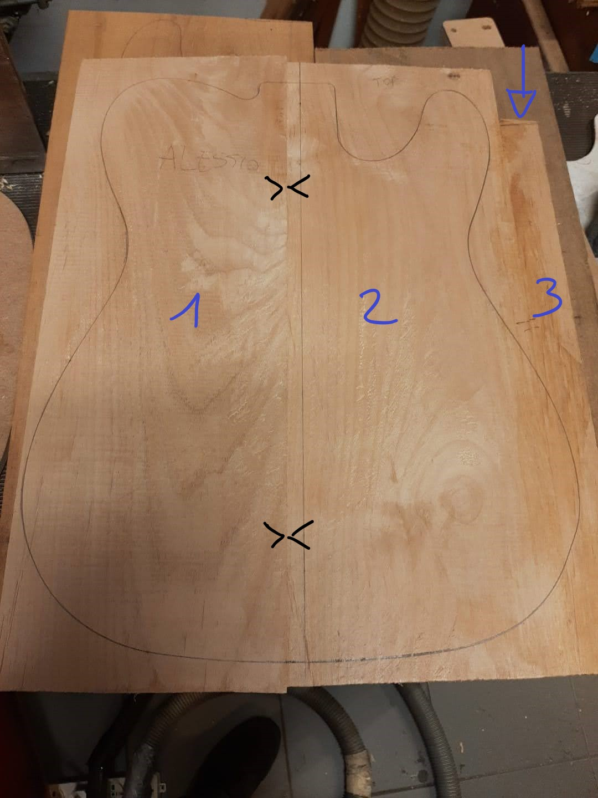
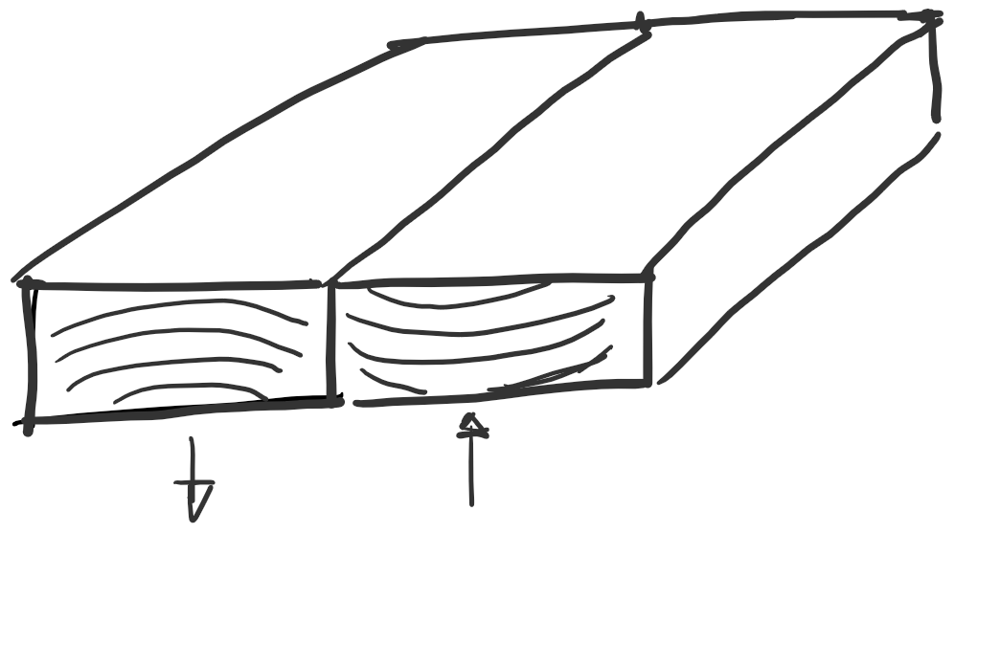
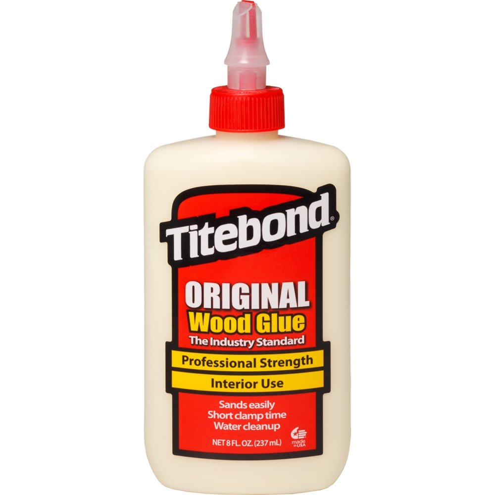

Ho iniziato un corso di liuteria elettrica! 🎸
Finalmente ho deciso! Dopo tanto tempo e i soliti rimandi che mi contraddistinguono ad ottobre 2022 inizio un corso di liuteria elettrica. Dopo le ore ore spese a guardare video YouTube e dopo aver cercato un po’ ovunque in rete possibilità di corsi “fisicamente basati” nelle vicinanze di Bologna, alla fine ne ho trovato uno coi vecchi metodi, ovvero tramite passaparola.
Il maestro liutaio è Marco Pontillo e il fatto che non mi abbia ancora insultato, vista la mia goffaggine con attrezzi manuali, è sicuramente un punto a suo favore.
Il corso durerà all’incirca un anno e il mio obiettivo è quello di raccontare e documentare le fasi della costruzione di una chitarra elettrica, nella speranza che il prodotto finale sia di qualità accettabile, o per lo meno che emetta qualche suono.
Scelta del modello, dei materiali e fasi preliminari
Al primo giorno di corso ci si conosce tra i corsisti e con Marco. Alcuni di loro sono già avanti con il lavoro fatto nel corso dell’anno precedente, anche se non tutti allineati con le fasi della lavorazione: c’è chi deve completare il corpo, chi il manico, chi le meccaniche, chi l’elettronica.
Modello
La prima cosa che viene chiesta è la tipologia di chitarra che vogliamo realizzare tra quelle compatibili in un corso per principianti. E qui iniziano i primi dubbi, avevo in mente di fare una telecaster, ma poi in laboratorio vedo il corpo di una Jaguar e mi viene in mente quella volta in cui io e Kurt…. mmmm, vabbè, torniamo al body. Il maestro suggerisce come prima chitarra di scegliere tra una stratocaster e una telecaster, anche se lui, sostanzialmente, raccomanda di inizare con una tele perché richiede meno lavorazioni e quindi meno possibilità di sbagliare (vedremo se la statistica mi tradirà come sempre).
Ho scelto alla fine una Telecaster ’70s vintera, che dovrebbe in linea teorica essere così ⬇️

ma sicuramente la statistica, che è il termine scientifico di “sfiga”, imporrà variazioni e “personalizzazioni” nel percorso.
Nel suo laboratorio Marco riesce anche a fornire un servizio di verniciatura a spruzzo con la finitura a piacimento, io ho deciso di verniciarla nera così come in foto, non so dire ora se verrà più lucida o opaca.
Nel mio perenne cazzeggiare su YouTube scopro che Chris Shiflett, chitarrista dei Foo Fighters, ne possiede una simile, per cui mi rincuora sapere che è perfetta per chi non sa suonare! Inoltre ha una pedaliera terribile, il video lo trovate qui.
Materiali
Altra scelta che viene fatta dal corsista è il tipo di materiale per il corpo e per il manico. Altre cose, tipo le meccaniche, il ponte, i pickup e elettronica in questa fase non vengono minimamente presi in considerazione.
- I tipi di legno usato per il corpo sono sostanzialmente due o tre: ontano americano (alder), frassino (ash), okoume, pioppo
- nel caso del manico: acero con/senza tastiera in palissandro
- verniciatura del corpo si/no (aspetto importante)
La decisione sulla verniciatura determina anche indirettamente il tipo di materiale usato per il corpo. Se, infatti, come nel mio caso si vuole ottenere un colore completamente coprente, non ha senso utilizzare dei materiali pregiati. In questo caso ontano americano va benissimo. Molti corsisti, invece, scelgono il corpo con finitura legno naturale. In questo caso vale la pena soffermarsi di più sulla scelta. Alcuni ad es. fanno un laminato alder + pioppo, quest’ultimo quando si aggiunge la finitura trasparente tira fuori delle venature pazzesche creando un effetto tridimensionale, decisamente psichedelico, infatti è il preferito dei nostalgici floydiani (tipicamente over ’60).
Ventaura e incollaggio dei pezzi
Una volta scelto il materiale per il corpo, nel mio caso alder, si sceglie l’asse di legno grezzo dal quale ricavare poi pezzi da unire. Anche in questo caso la scelta della verniciatura, se coprente o meno, gioca un ruolo determinante. Solitamente i pezzi da unire sono 2 (v. giunto vicino l’asse principale \(> | <\)). Questa è una regola da rispettare nel caso in cui la verniciatura è trasparente e si vedranno le venature del legno. In questo caso, oltre a rispettare la regola dei due pezzi, bisogna studiare bene le venature per capire quale figura può venire fuori, anche se di fatto è una mera questione di gusto.

Può succedere che la larghezza di partenza dell’asse grezzo non sia sufficente a coprire la sagoma del corpo (+ qualche mm di margine) ad unione completata. In questo caso si può pensare di unire un ulteriore pezzetto (pezzo 3 in figura) per raggiungere la larghezza necessaria. Questa operazione è fattibile quando il corpo va verniciato e le giunzioni verranno completamente coperte. Secondo Marco questa cosa la fa anche Fender con chitarre costosissime… 🤷 mi fido.
I pezzi da giuntare vengono prima tagliati a lunghezza e poi piallati sia di costa che di faccia fino a raggiungere uno spessore di circa qualche mm in più rispetto allo spessore finale, che per le fender è pari a 45 mm (nel sistema imperiale si usa solitamente uno spessore del body di 1 pollice e 3/4, pari esattamente a 44.45 mm). In questo caso le operazioni di taglio e sgrossatura sono state eseguite con attrezzi professionali, cioè una sega a nastro, una piallatrice e una levigatrice a nastro, tuttavia le stesse lavorazioni possono essere fatte con strumenti obbisticie e manuali… “seeeee dicono tutti così”.
💡Tip da falegname Pro
Qunado si incollano del legno massello, bisogna sempre tenere a mente l’evoluzione nel tempo del legno e dei movimenti che si possono creare tra le parti incollate. Infatti, quello che si fa solitamente per stabilizzare parti giuntate è invertire le fibre in modo che gli anelli di accrescimento siano concavi/convessi in modo alternato. Anche questo aspetto influenza la scelta dei pezzi da incollare e le venature che ne vengono fuori.

Colla
Un dettaglio importante che ho imparato è che nell’incollaggio dei pezzi il tipo di colla da usare è molto importante. La tipica colla vinillica (es. Vinavil) sembra che non vada bene perché una volta asciutta resta un po’ gommosa. Quella che usa Marco è una famossissima colla americana, la Titebond. Quest’utlima, a differenza dalla Vinavil è una colla alifatica e durante il “tiraggio” la colla di orienta lungo le fibre del legno risultando in un’unione molto forte, duratura, che non teme l’umidità. La versione usata Titebond è quella classica in confezione rossa.
